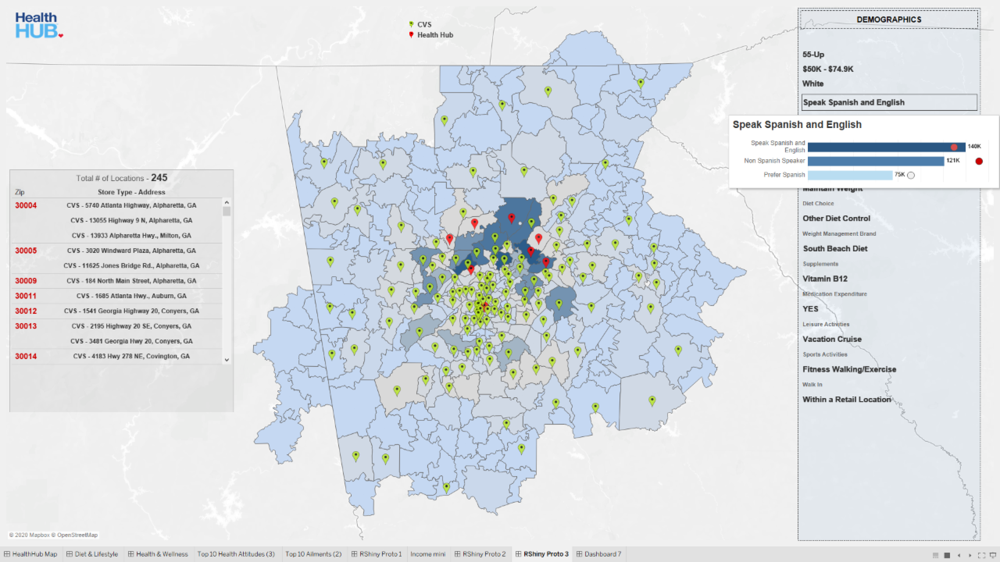
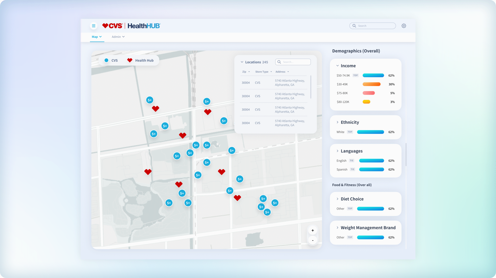

redesign of custom demographics insights product for CVS
cvs health hub

The version of CVS health hub before redesign is pictured here. Made in R Shiny, it was subject to limited design customizations. Product owners wanted to update it to make it more usable for the client, better summarize key insights for store owners, reflect the updated design style in use, and make it more easy to theme across partner agencies.
